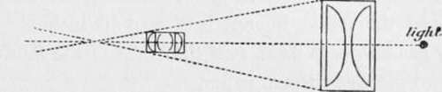

The Illuminant
Description
This section is from the book "The Barnet Book Of Photography", by Herts Barnet. Also available from Amazon: The Barnet Book Of Photography.
The Illuminant
The choice of the source of illumination is governed by two factors—efficiency and convenience. I use the word convenience in the broadest sense. As before stated, a point of light is optically the most efficient form, the reason for which is obvious, for, since this point must be central to the focal axis of the condenser, the rays will be more evenly distributed over its surface.
Take as an illustration the difference between the point of ignition of an electric arc and that of a flat-flame burner. Say the flat flame had a surface area of 2 inches square, then we should have light radiating not only from its centre, but also from innumerable points contained within its area ; and since a condenser is simply a lens (with a focus), it would be impossible to bring all the points of light into optical focus at once; hence we get an uneven distribution of rays over the surface of the condenser. On the other hand it is possible, and better, so to diffuse the light as to present a universally illumined surface over the whole area of the condenser, and thus produce a result similar to that which obtains in daylight enlarging.
This is undoubtedly the best method of illumination, but unfortunately the means of doing it involves a loss of light, the extent of which is governed by the diffusing medium employed.
Few of us, however, are able to indulge in an arc light, and so we must take the next best thing.
Acetylene is a good illuminant, and owing to its high actinic value can be used with a comparatively small point of ignition. Its use, however, involves extra and somewhat bulky apparatus, and unless a considerable amount of work is contemplated so that the apparatus may be kept in constant use, I very much doubt the advisability of going to the expense when such an excellent substitute is to be found in the incandescent mantle and ordinary coal gas. Personally, I have used this form of illumination for several years, and without any diffusing medium between the burner and condenser; I have never found my exposures to be excessive even when doing work as large as 40 in. x 30 in. The longest exposure ever required was that for a negative intended for contact printing, and for a 36 in. x 30 in. print, with f/16, the time was fifteen minutes.
A similar print from a negative made expressly for enlarging requires only from one to three minutes.* Magnesium ribbon will find no place in my category, since I have proved it to be extremely unconducive to the economical working of the process. There remains but the oil-lamp, and as a form of illumination, providing cleanliness is observed, a very excellent one indeed. I used a lantern with this form of illumination for five years, and never once had occasion to regret its efficiency. But it was kepi clean ! One point I would impress upon intending purchasers is to secure the pattern of burner known as the "duplex" (Fig. 5). Should it be desirable to use a diffuser between the burner and condenser in either method of illumination, in order to present a sheet of light to the face of the condenser it is advisable to employ finely-ground glass in preference to any other medium, as this involves the least loss of light. Two sheets of glass may be required and if so they should be placed about one inch apart.
* Should the worker find that he gets an image of the mantle on his screen, the difficulty may be got over by lightly etching the glass chimney with some sand-papcr.
Barnet Gaslight Popper
The Condenser
This is generally in the form of two plano-convex lenses mounted together, with their convex sides nearly touching, as shown in Fig. 6.
This answers fairly well with the smaller sizes, but when the diameter is large a good deal of light may be lost, hence the advisability of employing a diffuser.
The Lens, Or Objective
This is a factor of great importance in the enlarging lantern, and when the expense is of no great material import some consideration should be given to the optical efficiency. That the lens which took the photograph will serve to enlarge it is true enough, and in some cases may be the best one to use, but it must possess certain desirable features. If it be of too short a focus it will generally be too near the condenser to be within the focus of the light from that side, and will therefore be unable to pick up all the rays of light emanating therefrom, thereby engendering a loss of illumination and the presence of a coloured ring on the outer edge of the disc of light on the screen. Figs. 7 and 8 will show this clearly.
Fig. 5. Fig. 6.
In Fig. 7 we see what happens when a lens of too short a focus is used, but when one of longer focus is substituted the whole of the cone of rays passes through and is utilised (see Fig. 8). Hence it is advisable to use, say, a half-plate lens on a quarter-plate apparatus.
The type of lens used should be of the rapid rectilinear form, and have as large an effective aperture as possible. One of the latest forms of flat field lenses are the best, owing to their fine definition with a large aperture. A portrait lens may be used, and has the advantage of rapidity, but its circle of definition is very limited.
The Dark-Room Light
This is one of the most important factors in successful work, and deserves some consideration. You must see what you are doing. Now rapid bromide paper is about ten times less sensitive than an ordinary dry plate; it follows, therefore, that a light ten times stronger^may be used. The colour of the light also is of great importance, since the depth of tone of a positive varies considerably with different tints. Undoubtedly a yellow or canary tint is the most effective.
Fig. 7.
Fig. 8.
So long as the light is safe, it is immaterial how much there is of it, except that the greater the area of illumination the better we can see our manipulation. The law of the ntensity of light radiating from its source is as follows : The intensity of a light is inversely proportional as the square of the distance from its source.
That is to say, if the value of a light at one foot from its source is equal to 100, then at two feet it will be equal to 25, at three feet in, at four feet 6*25, and so on. It follows from this, then, that if our light has no effect on a piece of bromide paper at a distance of one foot, and for a period of five minutes, at two feet it may be exposed without danger for twenty minutes, and at three feet for forty-five minutes. For the "safety" of the lamp a good deal depends upon the form of light used.
If an oil-lamp is chosen, one thickness of canary fabric should be sufficient providing the distance between the burner and the fabric be not less than six inches. If an ordinary gas-burner is used, one thickness of the fabric and one or two pieces of tissue paper.
An incandescent mantle requires two thicknesses of the fabric. Yellow glass may be used if preferred, but must be covered with some diffusing medium, such as tissue-paper; on no account should a dark-room lamp be used, either in negative or positive work, without the light being diffused. In the construction and testing of a dark-room lamp for bromide work the following methods may be adopted. If large work be contemplated, an area of not less than one square foot of illuminating surface should be used.
Obtain light from as many sides as possible, but from the front or working side the light must be shielded from the eyes. It is convenient to use the lamp for negative work by interposing a screen of ruby fabric.
Test the light by exposing a piece of bromide paper, half of which is shielded, at a distance of six inches from the lamp, for a period of half an hour, and develop it with a strong developer. Should there be any signs of fogging, cover the fabric with one thickness of tissue-paper and repeat the test. Continue to do this if necessary till the light is " safe," but do not add so much tissue-paper as to reduce the light to the same degree as would obtain by the use of an extra thickness of canary fabric. Having certified the safety of the lamp to the above extent, a piece of bromide paper at two feet from the light is safe for a period of eight hours. The worker may, of course, reduce the experimental time to any degree he likes, and so obtain a correspondingly stronger light.
Continue to:
- prev: Bromide Printing
- Table of Contents
- next: The Negative
Tags
paper, print, negative, exposure, lens, development, camera, focus